Le cas traité
Un poteau intérieur d'un bâtiment contreventé, formé de quatre tôles soudées en caisson, doit tenir 90 minutes sous le feu normalisé. Il est encaissé dans des plaques de fibres-silicate de calcium de 15 mm, exposé sur ses quatre faces.
| Donnée | Valeur | Remarque |
|---|---|---|
| Section | h 400 · b 300 · tf 20 · tw 12 mm | caisson rectangulaire soudé, A = 206,4 cm² |
| Nuance | S355 | fy = 355 N/mm² pour t ≤ 40 mm |
| Effort normal | Nfi,Ed = −3500 kN | négatif en compression |
| Moment | My,fi,Ed = 100 kN·m | combinaison accidentelle |
| Longueurs | L = 4,0 m · lfi = 2,0 m | poteau continu, étage courant : lfi = 0,5·L EN 1993-1-2 §4.2.3.2(4) |
| βM | 1,4 | diagramme de moment fig. 4.2 |
| Exposition | caisson, 4 faces | encaissement par plaques |
| Feu, durée | ISO 834 · R90 | EN 1991-1-2 §3.2 |
| Protection | plaques silicate, dp = 15 mm | λp = 0,15 W/m·K, ρp = 600 kg/m³, cp = 1200 J/kg·K |
La fenêtre
Lancez Nommogramme.exe (Windows, aucune installation), ou nommo bureau
sur un poste où le paquet Python est installé. La fenêtre s'ouvre sur un cas par défaut, un
HEB 300 sans protection.
- À gauche, la saisie, de haut en bas dans l'ordre du calcul : élément, section, sollicitations, géométrie, feu, protection, paramètres avancés.
- À droite, le verdict, les quatre chiffres clés, le détail, puis trois onglets de figures.
- En bas, l'enregistrement de la note de calcul et des figures.
Tout se recalcule à chaque modification : il n'y a pas de bouton « calculer ». Quand le curseur prend la forme d'un point d'interrogation au survol d'un nom de paramètre, une infobulle donne son explication et sa clause normative.

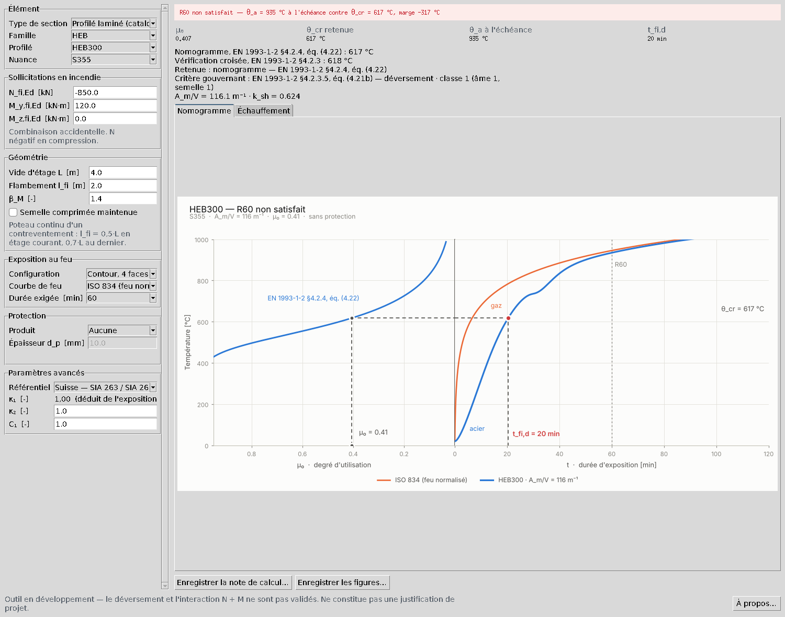
1Décrire la section
Dans le bloc Élément, choisissez Type de section → Caisson rectangulaire soudé, et la nuance S355. Le bloc Section soudée apparaît : entrez les cotes en millimètres, h = 400, b = 300, tf = 20, tw = 12.
Sous les champs, l'outil affiche aussitôt le nom de la section et ses caractéristiques principales : A = 206,4 cm², 162 kg/m, Iy = 52 691 cm⁴, Wpl,y = 3058 cm³. Elles sont calculées tôle par tôle, gorges de soudure et congés négligés. Aucune valeur tabulée ne vient les recouper : c'est la raison d'être de l'onglet Coupe de la section, à l'échelle, où une erreur d'un facteur dix se voit d'un coup d'œil.

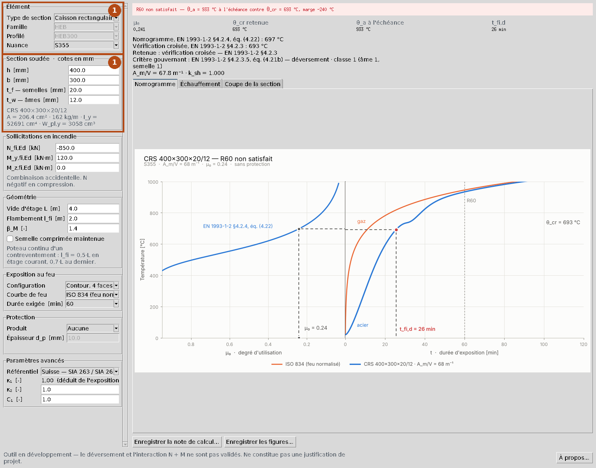
2Sollicitations et géométrie
Dans Sollicitations en incendie, entrez les efforts de la combinaison accidentelle : Nfi,Ed = −3500 kN, My,fi,Ed = 100 kN·m, Mz,fi,Ed = 0.
Convention de signe : la compression est négative. Un effort positif est une traction, et l'outil appliquerait alors la vérification en traction. Les formules de l'EN 1993-1-2 raisonnent en compression positive ; la conversion est faite en un seul endroit du code, et la note de calcul emploie la valeur absolue dans ses formules.
Dans Géométrie : vide d'étage L = 4,0 m, longueur de flambement lfi = 2,0 m, et βM = 1,4. Un poteau continu d'un bâtiment contreventé est bridé par les étages froids adjacents : la norme admet lfi = 0,5·L en étage courant et 0,7·L au dernier étage EN 1993-1-2 §4.2.3.2(4). Laisser lfi à zéro reprend le vide d'étage, ce qui est sécuritaire.
La case Semelle comprimée maintenue ne concerne que les poutres sous dalle : cochée, elle écarte le critère de déversement.

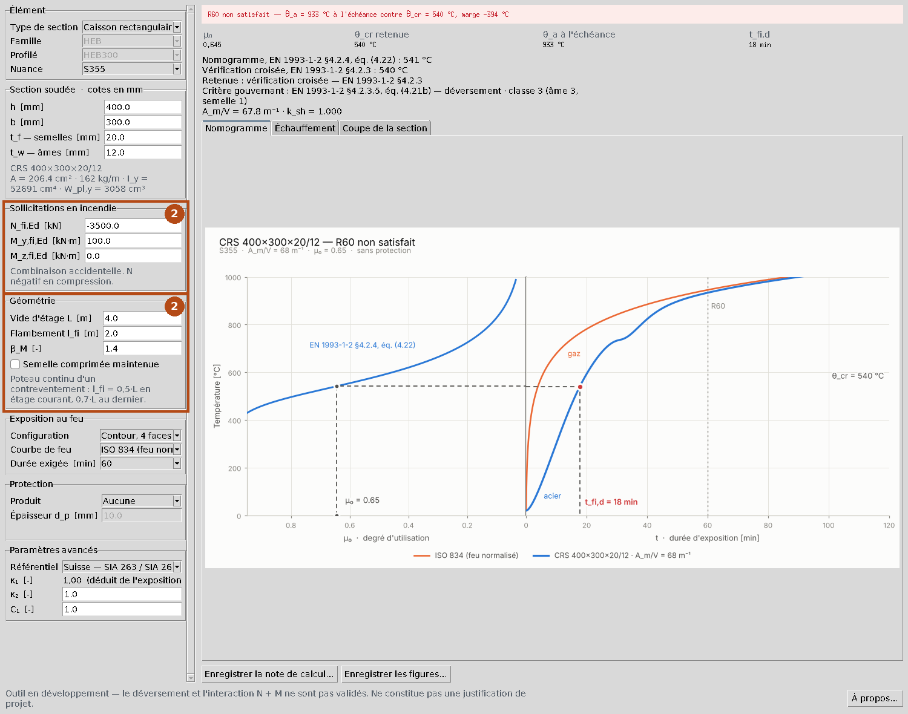
3Feu, protection et paramètres avancés
Exposition au feu
Configuration → Caisson, 4 faces, courbe ISO 834, durée exigée 90.
- Contour : la protection suit la forme du profilé (élément nu, flocage, peinture).
- Caisson : encaissement rectangulaire par plaques ; la chaleur entre par le périmètre du rectangle EN 1993-1-2 §4.2.5.1, tab. 4.2 et 4.3.
- 3 faces : une face est couverte par une dalle, toujours la semelle supérieure.
Protection
Produit → Plaques de fibres-silicate de calcium, épaisseur dp = 15 mm. Sous le champ, la fiche du produit rappelle λp, ρp, cp, le mode de pose et la plage d'épaisseurs usuelles. Ces valeurs sont génériques : une étude de projet doit reprendre celles de l'agrément du produit retenu.
Paramètres avancés
- Référentiel : Suisse (SIA 263 / SIA 260) ou Eurocode, valeurs recommandées. Seul l'encadrement change (γM,fi, combinaison), pas les équations.
- κ1 n'est plus saisi : il est déduit de l'exposition EN 1993-1-2 §4.2.3.3(7). 1,00 sur quatre faces ; sur trois faces, 0,70 sans protection et 0,85 avec. Ici, 1,00.
- κ2 : 0,85 aux appuis d'une poutre hyperstatique, 1,00 sinon.
- C1 : forme du diagramme de moment, pour le moment critique de déversement ; 1,00 (moment constant) est le cas le plus défavorable.

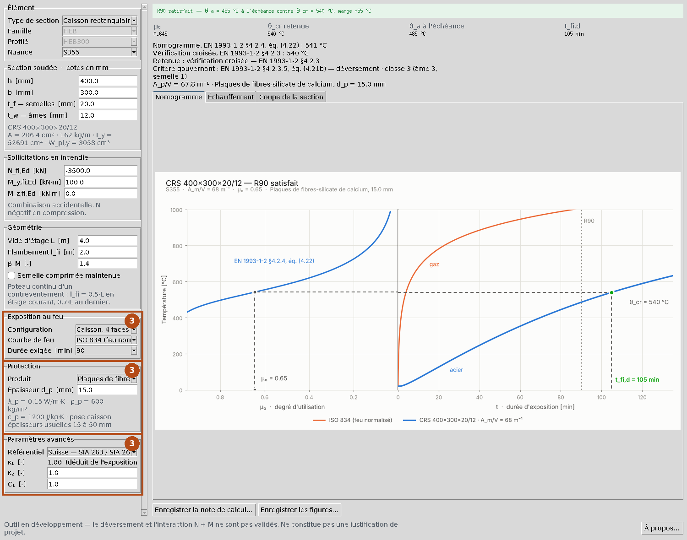
4Lire les résultats
Le bandeau du haut donne le verdict : R90 satisfait, θa = 485 °C à l'échéance contre θcr = 540 °C, marge +55 °C. Les quatre chiffres clés suivent.
| Grandeur | Valeur | Ce qu'elle dit |
|---|---|---|
| μ0 | 0,645 | degré d'utilisation à 20 °C sous charges d'incendie EN 1993-1-2 §4.2.4, éq. (4.23) |
| θcr retenue | 540 °C | la plus défavorable des deux voies, voir ci-dessous |
| θa à l'échéance | 485 °C | température de l'acier à 90 min |
| tfi,d | 105 min | durée avant d'atteindre θcr |
Deux températures critiques
La méthode du nomogramme tire θcr de μ0 par l'équation (4.22) : 541 °C. Elle est exacte quand la ruine est une ruine de section, mais elle ignore que l'élancement croît avec la température. La vérification croisée cherche donc la température à laquelle le taux complet, flambement et interaction compris, atteint 1,00 : 540 °C. L'outil retient la plus basse. Ici, l'écart est faible ; sur un poteau élancé, il dépasse souvent 30 °C, et un avertissement le signale.
Le détail indique aussi le critère gouvernant (ici l'éq. (4.21b), avec χz), la classe de section (classe 3 : l'âme de 360 mm sur 12 mm est trop élancée pour la plastification, et le module élastique est retenu), le facteur de massiveté Ap/V = 67,8 m⁻¹ et la protection.

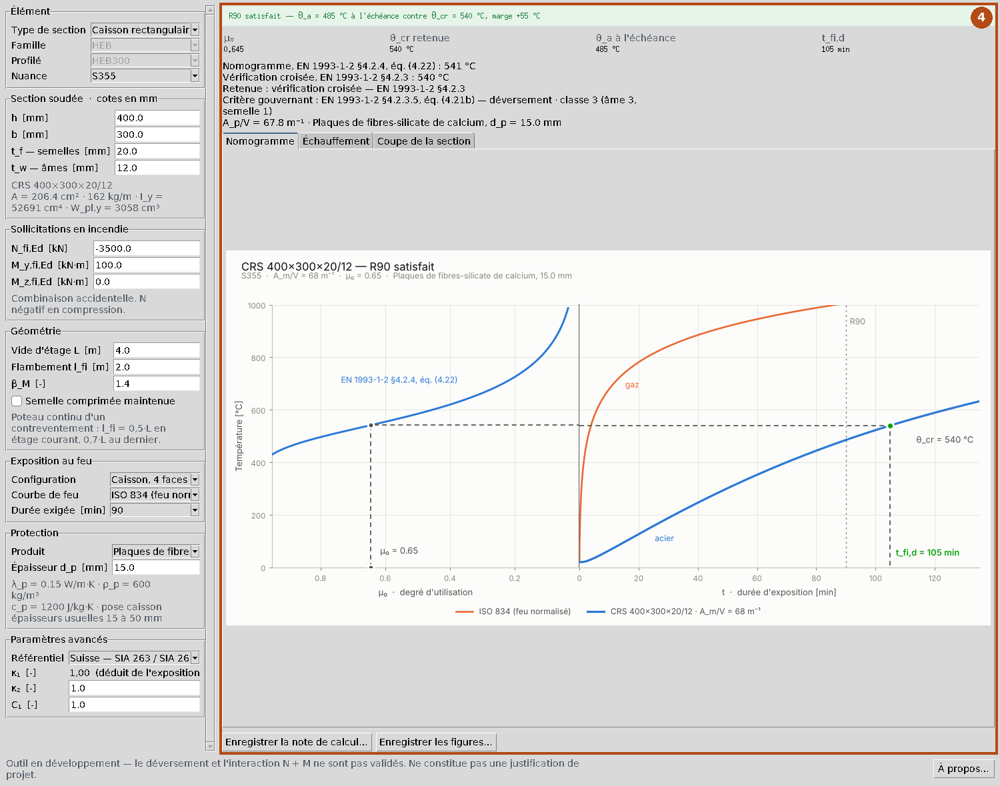
5Les figures
Nomogramme. Il se lit de gauche à droite. À gauche, la courbe de l'éq. (4.22) : partir de μ0 = 0,65 en abscisse, monter jusqu'à la courbe, lire θcr sur l'axe vertical commun. À droite, suivre cette horizontale jusqu'à la courbe d'échauffement de l'acier : l'abscisse du croisement est tfi,d = 105 min. La verticale R90 doit tomber à gauche de ce point.

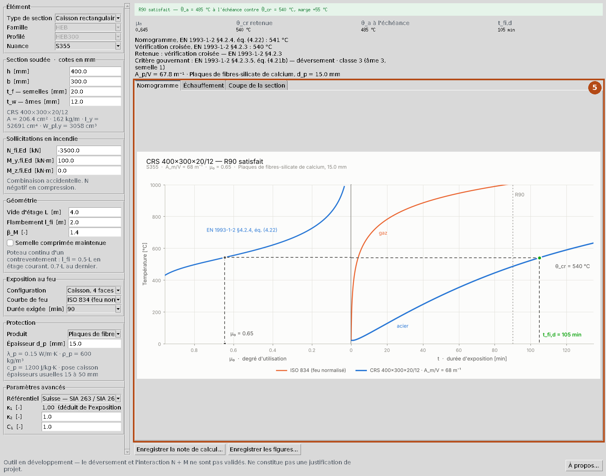
Échauffement. Températures des gaz et de l'acier dans le temps, avec θcr et l'échéance. Le point vert marque la température de l'acier à 90 min et la marge.

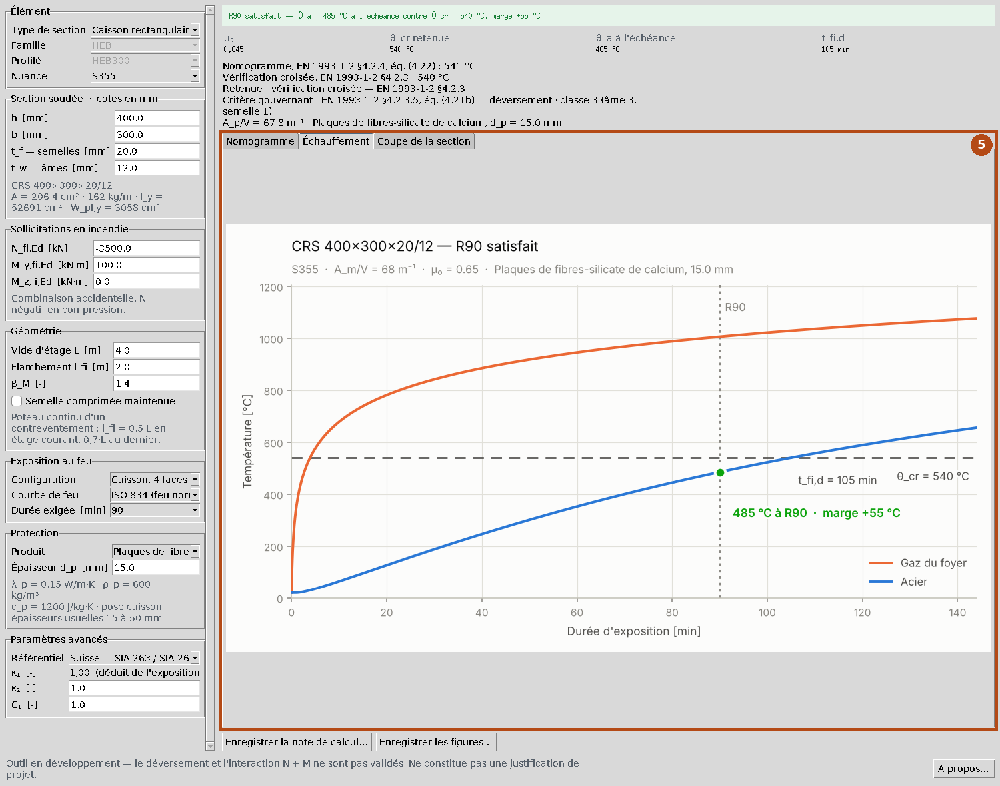
Coupe de la section. Pour une section soudée seulement : la coupe à l'échelle, cotée, avec le centre de gravité. C'est le contrôle de la saisie.

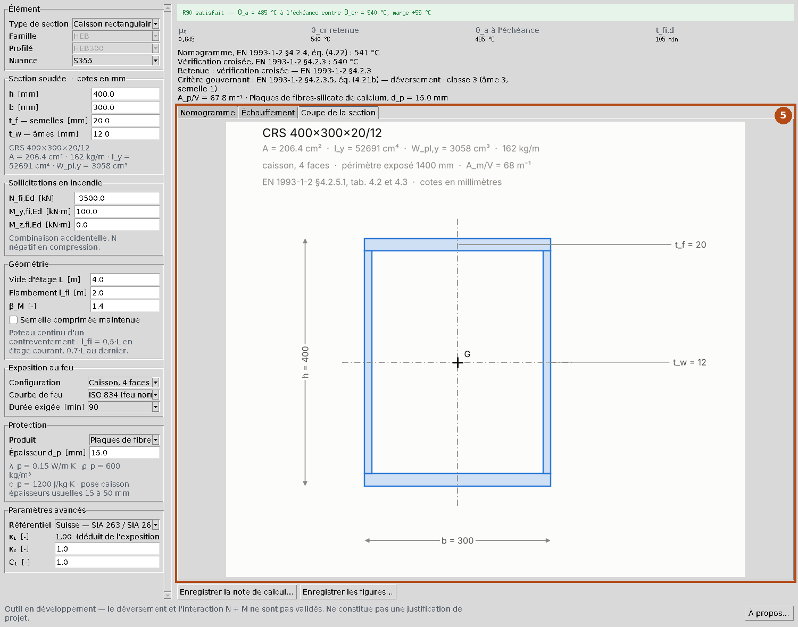
6La note de calcul
Cliquez sur Enregistrer la note de calcul… en bas de la fenêtre. Le format
proposé est le PDF détaillé ; choisir l'extension .md donne à la place
un résumé Markdown, plus court, sans application numérique. Dans l'interface web, deux boutons de
téléchargement proposent les deux formats ; en ligne de commande, --rapport note.pdf.
La note PDF de cet exemple : note-exemple.pdf (9 pages).
Ce qu'elle contient
Chaque calcul y est donné en trois temps, avec sa clause en marge : la formule littérale, la même avec les valeurs substituées, puis le résultat. Un vérificateur peut la refaire à la calculatrice, ligne par ligne.
- Données : profilé, nuance, exposition, feu, protection, référentiel, γM,fi, κ1 avec son origine (« quatre faces exposées »).
- Section : les tôles une à une, l'aire refaite par leur somme, les caractéristiques.
- Sollicitations, avec la convention de signe.
- Matériau et classification : ε, c/t de chaque paroi rapporté à ε, classe.
- Élancements à 20 °C : λ1, λ̄y, λ̄z, et Mcr, λ̄LT quand le déversement s'applique.
- Résistances à 20 °C : α, φθ, χfi par axe, Nb,fi,Rd, Mfi,Rd.
- Interaction : μy, ky, μz, kz, μLT, kLT, éq. (4.21a) et (4.21b), d'où μ0.
- Température critique : l'éq. (4.22), puis la vérification croisée refaite à la température trouvée — ky,θ, kE,θ, élancements à chaud, résistances, taux — pour montrer qu'il vaut bien 1,00.
- Échauffement : Ap/V, puis un pas de l'intégration refait à la main (ca, φ, Δθa) et confronté à l'historique calculé, et le tableau θg, θa toutes les 10 minutes.
- Vérification : θa(90 min) ≤ θcr, marge, tfi,d, verdict.
Suivent les avertissements, la liste des clauses qui restent à recouper avec un exemplaire officiel des normes, puis les figures : nomogramme, échauffement, coupe.

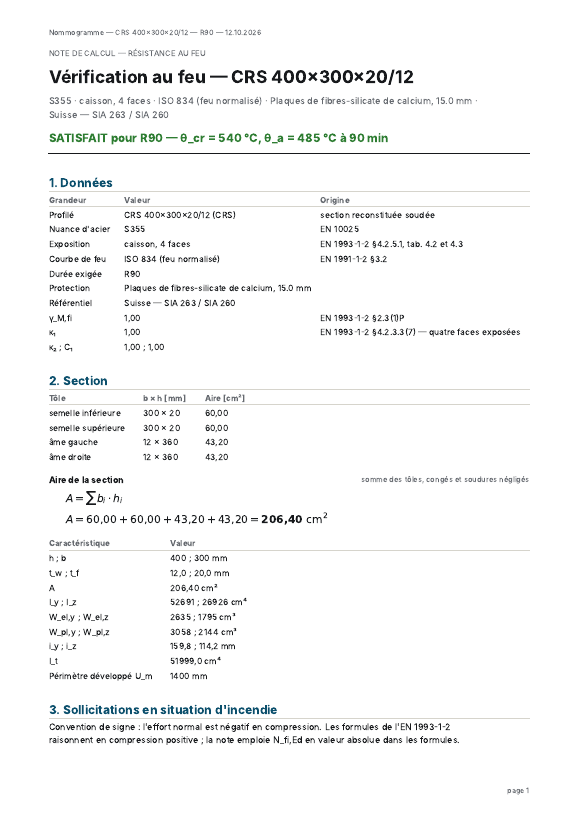

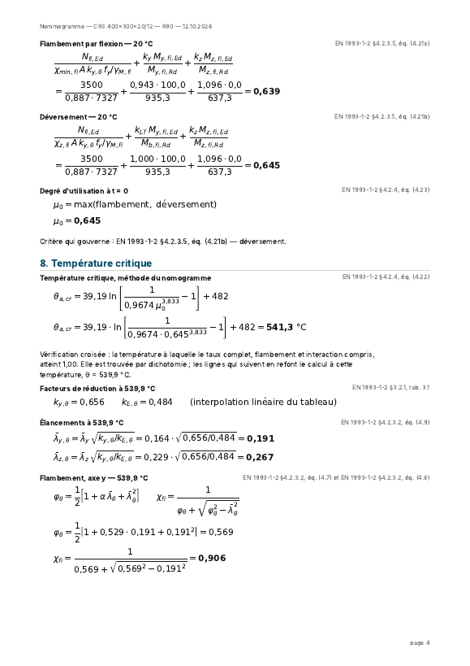

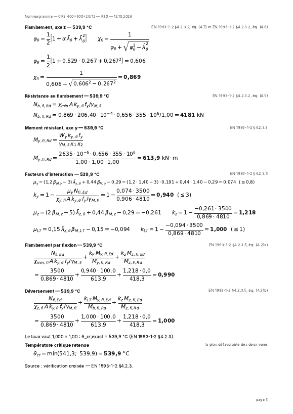

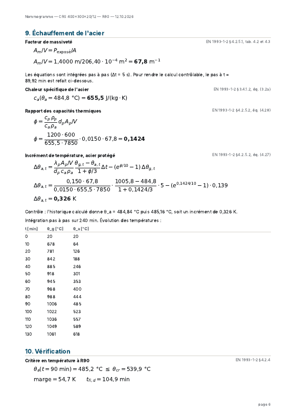
Comment contrôler la note. Le pas thermique refait page 6 donne Δθa = 0,326 K, et l'historique passe de 484,84 °C à 485,16 °C : les deux concordent. La vérification croisée page 5 retombe sur un taux de 1,000. Ce sont les deux recoupements à regarder en premier : s'ils tiennent, la chaîne de calcul est cohérente avec elle-même.
Variantes
Protection en bois lamellé-collé
Pour un moulage négatif du profilé en lamellé-collé, à face extérieure rectangulaire : produit Bois lamellé-collé GL24h, exposition caisson, et pour dp l'enrobage minimal de bois devant l'acier (devant la semelle ou le bout d'aile), jamais l'épaisseur au droit de l'âme.
Le bois carbonise : son épaisseur saine décroît selon d(t) = dp − βn·t, avec βn = 0,7 mm/min EN 1995-1-2 §3.4.2(2), éq. (3.2). Sous 5 mm de bois sain, l'acier est calculé nu. Le résultat affiche l'instant où la protection est perdue, et un avertissement rappelle que ce modèle sort du domaine de l'EN 1993-1-2 : il doit être justifié par un calcul avancé ou un essai.
Poutre sous dalle, trois faces
Choisissez Contour, 3 faces ou Caisson, 3 faces : la semelle supérieure est couverte, et κ1 passe de lui-même à 0,70 (acier nu) ou 0,85 (protégé). Cochez Semelle comprimée maintenue si la dalle la bloque latéralement.
Le même calcul en ligne de commande
nommo verifier --section caisson --h 400 --b 300 --tf 20 --tw 12 \
--nuance S355 --N=-3500 --My 100 --L 4 --lfi 2 --beta-M 1.4 \
--exposition caisson4 --duree R90 \
--protection plaques_silicate --dp 15 \
--rapport note.pdf
Écrire --N=-3500 avec le signe égal : sans lui, le tiret serait pris pour une option.
Limites à garder en tête
- L'outil ne constitue pas une justification de projet. La compression et la flexion simple sont recoupées avec la documentation SZS steeltec 02 ; le déversement et l'interaction N + M ne l'ont été avec aucun calcul de référence externe.
- Les propriétés des produits de protection sont génériques : reprenez celles de l'agrément.
- Les sections soudées ne sont recoupées par aucune table : contrôlez la coupe.
- La note liste en fin les clauses qui restent à recouper avec un exemplaire officiel des normes.
Le détail de la validation est dans validation.md, celui des clauses citées dans references.md.